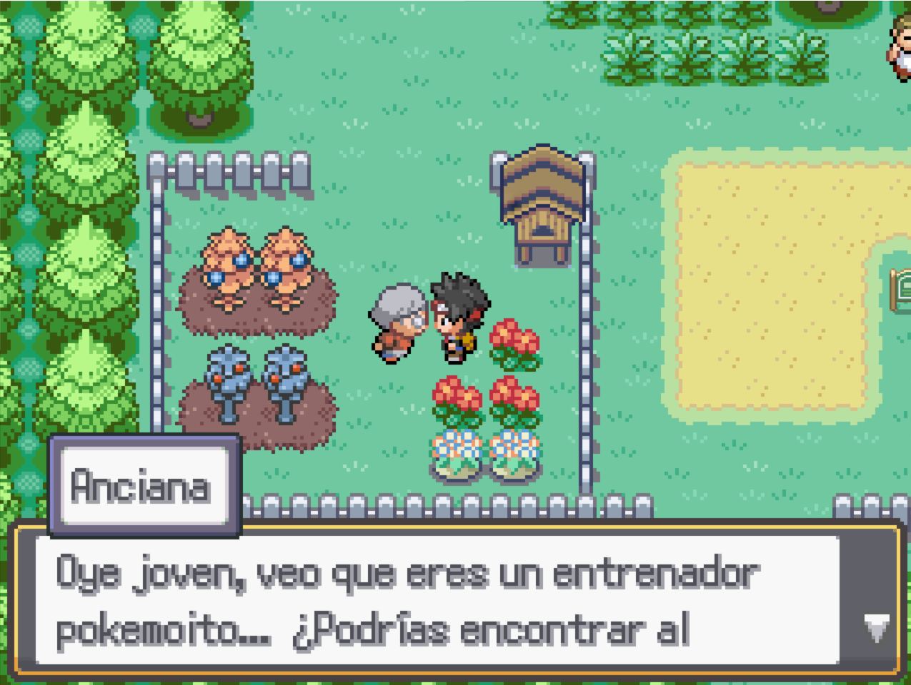

Ruta 1
Nada más entrar a la Ruta 1 verás a un hombre sufriendo dolor, y saltará una pequeña cinemática en la que se transformará en un Psyduck involuntariamente, después de haberte contado que unos extraños hombres le inyectaron algo a traición.
Después de la escena, una mujer agresiva con el uniforme del Team Rocket se acercará a ti y tendrás que luchar contra ella.
Botamon evolucionará después de derrotar a la mujer, se sorprenderá al ver que tu compañero no aparece en sus registros. Huirá después de amenazarte, diciéndote que el "Teniente" vendrá a por ti si cuentas algo de lo que has visto
Cuando se haya ido, Koromon te hablará. Te explicará que lleva mucho tiempo esperándote y que eres el elegido para salvar el Mundo Digital.
Si decides jugar con el reto del Nuzlocke, los pokemoitos que sean debilitados, morirán. Y no podrán volver a usarse.
Tu compañero Digimon es diferente a los demás, aunque sea derrotado siempre podrá volver a tu equipo después de curarse. Estará a tu lado durante toda la aventura.
Si subes por la ruta te encontrarás con un hombre gordo, hablando con él desbloquearás la función de "compañero" haciendo posible que uno de tus compañeros camine junto a ti. Algunos Pokemoitos necesitan subir su felicidad para evolucionar, caminar junto a ellos es una buena forma de hacerles felices..
Después de hablar con él recoge el cofre de la derecha, que contiene un Antiderretir. Recuerda que puedes ver la lista de objetos y objetos ocultos de todas las zonas aquí.
A continuación ve hacia el oeste para encontrar a una entrañable anciana que te entregará una misión secundaria.
Esos árboles de colores de su jardín tienen Bayas que se pueden recolectar, son bastánte útiles como ingredientes de fabricación, recolecta todas las que puedas en tu camino.
Justo arriba encontrarás la casa de la anciana y dentro estará su marido, te dará un mapa y un valioso consejo para el resto de tu aventura.
Cuando hayas terminado de hacer todo lo anterior ya estarás preparado para avanzar por la Ruta 1, encontrándote con varios entrenadores en el camino. No olvides estar atento a los posibles objetos ocultos de la zona.
Antes de enfrentarte al primer entrenador, es recomendable que uses la captura de esa zona, así que métete en la hierba hasta encontrar el primer Pokemoito, que no se te olvide subirle el nivel y curar a tus Pokemoitos antes de seguir avanzando.
Con la captura realizada y tus Pokemoitos listos para el combate, crúzate en el camino de los entrenadores de esta ruta y derrótalos. Ganar a entrenadores es la mejor forma de conseguir dinero, que usarás más adelante para comprar cosas importantes y necesarias.
Cuando les hayas derrotado dirígete al norte y entrarás en la nueva zona, Ciudad Mondongo.
Allí se encuentra el primer Gimnasio Pokemoito, tu objetivo principal es derrotar a todos los líderes para ganar su medalla y así ganar el derecho a desafiar a la Liga Pokemoito.